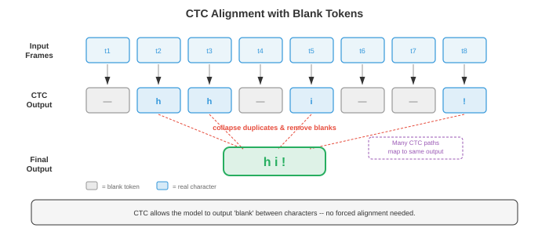
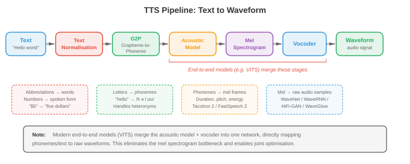
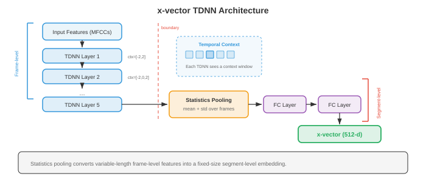
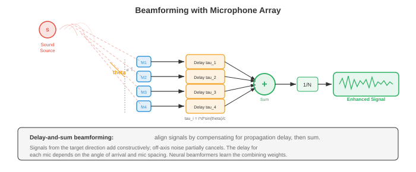

This is the closest the compendium comes to a chapter you have already studied. A microphone is an accelerometer that happens to be pointed at air. The signal it produces is sampled, windowed, transformed and plotted using operations you ran on a bearing housing in a vibration lab. The vocabulary changes. The mathematics does not.
That makes this sheet unusual, and it changes what it should do. For eight chapters the work has been building bridges from mechanics to a subject you had never seen. Here the bridge is mostly already built, so the useful work is different: naming what is genuinely identical, being precise about the handful of things that are not, and pointing at the one idea in this chapter that has no mechanical counterpart at all — the mel scale, which is a fact about your ear rather than about the signal.
Parts 1 and 2 cover the whole of the source chapter’s signal-processing file: from a pressure wave to the log-mel spectrogram that a modern speech model actually consumes. §01–§05 take the signal to its spectrum; §06–§09 turn that spectrum into features. Part 3 picks up where the machine learning starts.
The verdict column is the important one. Most rows in this table say identical operation, which has not happened before in this series.
| You already do this | Audio ML calls it | Verdict |
|---|---|---|
| Accelerometer FFT of a machine | Magnitude spectrum of a frame | Identical operation. Same transform, same units problem, same interpretation. |
| Choosing DAQ sample rate above 2× the top frequency of interest | Nyquist criterion, \(f_s\ge 2f_{\max}\) | Identical theorem. You apply it when you set up a measurement. |
| Anti-aliasing filter on the signal conditioner | Anti-aliasing filter before the ADC | The same hardware. |
| Hanning window on a vibration spectrum | Hann window before the FFT | Identical. Same function, same reason: leakage. |
| Resolution \(\Delta f = 1/T\) on a spectrum analyser | Frequency resolution of an STFT frame | Identical. Longer capture, finer lines — the rule you already use. |
| Waterfall plot, speed ramp-up | Spectrogram | Identical object. Time on one axis, frequency on the other, magnitude as colour. |
| Order tracking to find shaft speed | Autocorrelation pitch detection | Same method. Find the lag that repeats; invert it for the rate. |
| Overall vibration level (RMS) | Frame energy | Identical. Both are the \(\ell_2\) norm of Chapter 01. |
| Harmonics of running speed; sidebands | Fundamental and harmonics of a voiced sound | Same structure. A vowel is a machine with a 150 Hz shaft. |
| FIR/IIR filters, poles and zeros, unit circle | The same, unchanged | Identical. Straight out of a controls course. |
| Change of basis (Chapter 02) | The DFT matrix \(W\) | Exact. The DFT is an orthogonal basis change, nothing more. |
| Convolution (Chapter 06 §09) | Filtering | Identical. And the convolution theorem makes it a multiply. |
| Uncertainty in measurement resolution | Gabor limit, \(\Delta t\,\Delta f\ge 1/4\pi\) | Related, stated precisely. A real theorem, not a rule of thumb. |
| — nothing — | The mel scale | No mechanical analogue. It describes your cochlea, not the signal. §08. |
Sound is a pressure wave. A vibrating surface — a vocal fold, a speaker cone, a gear tooth meshing — pushes and pulls on the air, and those pressure variations travel at about 343 m/s until something transduces them. The source chapter offers a stone-in-a-pond picture. You do not need it: this is a longitudinal wave in a compressible medium, which you have already met in fluid mechanics, and a microphone is a transducer with a frequency response and a calibration constant, exactly like the accelerometer you have already bolted to a bearing housing.
A pure tone is one sinusoid:
Amplitude \(A\) sets loudness, frequency \(f\) sets pitch, phase \(\phi\) sets where in the cycle it starts, and the period is \(T=1/f\). Nothing here is new. What is worth pausing on is which of the three the field throws away, and why.
A piano and a violin playing concert A both have a fundamental at 440 Hz. They sound different because the amplitudes of the harmonics — the integer multiples, 880, 1320, 1760 — differ. That set of relative amplitudes is called timbre, and it is the same object as a machine’s vibration signature: 1× running speed, 2×, 3×, with the pattern of relative heights telling you what you are looking at. A misaligned coupling and a worn gear differ in their harmonic pattern in exactly the sense that a violin and a piano do.
This is not an analogy. It is the same measurement, on the same kind of instrument, read the same way.
Decibels. Human hearing spans an enormous amplitude range, so level is quoted logarithmically:
with \(A_{\text{ref}}=20\,\mu\text{Pa}\), the threshold of hearing. Whisper ≈ 30 dB, conversation ≈ 60 dB, rock concert ≈ 110 dB. Two numbers worth committing: 6 dB doubles the amplitude (because \(20\log_{10}2=6.02\)), and doubling the amplitude quadruples the power, since power goes as amplitude squared. The factor-of-20 rather than factor-of-10 in front of the logarithm is exactly the amplitude-versus-power distinction you already handle when reading a vibration severity chart.
In machinery diagnostics phase is a primary measurement. Phase between two accelerometers is how you distinguish unbalance from misalignment; a phase reference from a tachometer is what makes balancing possible at all. You would never discard it.
Speech pipelines routinely do discard it. The magnitude spectrogram keeps \(|X[k]|\) and throws \(\angle X[k]\) away, because human pitch and timbre perception is largely phase-insensitive. That is a statement about perception, not about the signal — the information really is gone, and reconstructing audio from magnitude alone is a hard research problem with its own literature. Phase still matters here for anything spatial: stereo, beamforming, and source localisation, which are the audio equivalents of your two-accelerometer measurement.

A computer cannot hold a continuous function, so the signal is measured at regular intervals. The sample rate \(f_s\) is how many measurements per second: 8 kHz for telephony, 16 kHz for most speech models, 44.1 kHz for CD audio. The Nyquist–Shannon theorem says a signal can be perfectly reconstructed from its samples if and only if
and \(f_s/2\) is called the Nyquist frequency. Above it, frequencies do not disappear — they fold back and reappear as lower frequencies that were never in the signal. A 15 kHz tone sampled at 16 kHz comes back as \(|16-15|=1\) kHz: a completely different pitch, indistinguishable from a real 1 kHz tone. Aliasing is irreversible. Once the samples are taken, no amount of processing recovers what was lost.
When you set up a vibration measurement you pick a sample rate above twice your highest frequency of interest, and you rely on the signal conditioner’s anti-aliasing filter to remove what is above it. Analyser vendors typically sample at \(2.56\times\) the displayed span rather than exactly \(2\times\), because a real low-pass filter has a finite roll-off and needs guard band — the extra 28% is the filter’s transition region. Audio hardware does the identical thing: 44.1 kHz for a 20 kHz audio band is \(2.205\times\), not \(2\times\), for exactly this reason.
The wagon-wheel effect in films is the same phenomenon at 24 frames per second. A wheel turning slightly faster than the frame rate appears to creep backwards, which is a rotating machine aliasing under a strobe — something you may have seen directly if you have ever used a stroboscope to freeze a shaft.
A 700 Hz tone is sampled at 1000 Hz, so the Nyquist frequency is 500 Hz. What will the samples look like?
ƒs/2
actually record
Aliasing is a solved problem in hardware — the ADC filters before it samples.
Where it still catches people is resampling in software: converting 44.1 kHz
audio to 16 kHz for a speech model. If you simply take every 2.75th sample without
low-pass filtering first, everything between 8 kHz and 22 kHz folds down into your
speech band as noise that no later stage can remove. Every audio library’s
resample does the filtering for you. Decimating by array slicing does not,
and it is a quiet, plausible-looking bug — the audio still sounds roughly right.

Sampling discretises time. Quantisation discretises amplitude: each measured value is rounded to the nearest of \(2^n\) levels. CD audio uses 16 bits (65,536 levels). Telephony often uses 8 bits with \(\mu\)-law companding, a deliberately nonlinear mapping that spends more levels on small amplitudes, where the ear is more sensitive to a given absolute error.
The rounding error is quantisation noise, with variance \(\Delta^2/12\) for a step size \(\Delta\). That \(1/12\) is not an audio constant — it is the variance of a uniform distribution on an interval of width \(\Delta\), the same result you would get for the rounding error in any instrument reading. It is the reason a 16-bit recording has roughly 96 dB of dynamic range: each bit buys about 6 dB, which is the amplitude-doubling figure from §01 arriving again.
A 12-bit DAQ card on a ±10 V range has \(\Delta = 20/4096 = 4.9\) mV, and no amount of averaging recovers detail below it. You already reason about this when you choose a measurement range: too wide and you waste resolution, too narrow and you clip. Audio engineers call the same trade-off gain staging, and clipping is exactly what it is in a strain-gauge amplifier — the top of the waveform is flat and the information is gone.
Before transforming anything, three cheap measurements are taken straight off the waveform. All three are objects you have already computed.
Energy
Speech has high energy, silence has low energy, and the simplest voice-activity detector is a threshold on this number. It is the squared \(\ell_2\) norm of Chapter 01 §04, and dividing by \(N\) and taking the root gives RMS — the single number on the overall-vibration meter you would clamp to a pump casing.
Zero-crossing rate
A crude frequency estimate: a pure tone at \(f\) Hz crosses zero \(2f\) times per second, so ZCR is a one-line pitch tracker that costs nothing. High ZCR means high-frequency content or noise — a fricative like “s”; low ZCR means voiced speech, where the vocal folds are vibrating periodically.
Autocorrelation
How similar is the signal to a delayed copy of itself? At lag \(k=0\) this is the energy. For anything periodic, \(R[k]\) peaks at the period and its multiples, so pitch detection is: find the first significant peak after zero, and the frequency is \(f_s/k_{\text{peak}}\).
Autocorrelation is the dot product of Chapter 01 between a signal and a shifted version of itself, and it is the standard tool for recovering a repetition rate from a noisy trace. In machinery work you use it for exactly that: extracting the running speed, or the repetition interval of a bearing defect impact, when the spectrum is too cluttered to read directly.
The correspondence goes further than the method. A voiced sound has a fundamental around 85–180 Hz for an adult male voice, 165–255 Hz for an adult female, with harmonics stacked above it. A rotating machine has a running speed with harmonics stacked above it. Pitch detection and order tracking are the same problem, and they fail in the same way: at a missing fundamental, both can lock onto a harmonic and report double or half the true rate. Audio engineers call that octave error; you would call it reading 2× instead of 1×.
The waveform hides its own structure. The Discrete Fourier Transform decomposes \(N\) samples into \(N\) complex frequency components:
\(|X[k]|\) is the amplitude at frequency \(f_k = k f_s/N\), and \(\angle X[k]\) the phase. You have pressed this button on an analyser many times. What the source says next is the part worth slowing down for, because it is the connection to Chapter 02 and it is exact.
Write the transform as a matrix, \(\mathbf{X}=W\mathbf{x}\) with \(W_{kn}=e^{-j2\pi kn/N}\). Then \(W W^{H}/N = I\): the columns are orthogonal, and the DFT is a rotation to a different orthonormal basis — out of the basis of unit impulses (“how much at this instant”) and into the basis of complex exponentials (“how much at this frequency”). Verified numerically to 5×10−15.
Two consequences you already believe in another form. First, no information is created or destroyed — the transform is invertible, so the spectrum and the waveform are the same object in two coordinate systems, exactly as a stress tensor is the same object whether written in global axes or principal axes. Second, energy is preserved:
That is Parseval’s theorem, and it is the statement that an orthogonal change of basis preserves length — the same fact that lets you compute von Mises stress from principal stresses without worrying which frame you started in. The total vibration energy is the total vibration energy whether you measure it off the waveform or sum it across the spectrum lines.
The Fast Fourier Transform is not a different transform. It is an algorithm that computes the same DFT in \(O(N\log N)\) instead of \(O(N^2)\), by recursively splitting into even- and odd-indexed halves — Cooley–Tukey. At \(N=4096\) that is the difference between about 16.8 million operations and about 49 thousand, a factor of 341. Real-time spectral analysis exists because of this algorithm, and so does the entire field this chapter describes.
A spectrum does not have a frequency at every value. It has \(N\) bins, spaced \(\Delta f = f_s/N\) apart. At 16 kHz with a 512-point FFT the spacing is \(16000/512 = 31.25\) Hz, and every component lands in a bin whether or not it sits at the bin’s centre frequency.
Which gives the rule you already use on an analyser, in its exact form: resolution depends only on how long you captured, \(\Delta f = 1/T\). A 25 ms speech frame gives 40 Hz resolution no matter what FFT length you pad it to. Zero-padding a 400-sample frame to 512 points, as every speech pipeline does, buys interpolation between bins and a cheaper radix-2 transform — it does not buy resolution. Two tones 20 Hz apart are not resolvable in a 25 ms frame, and no amount of padding will separate them. This is the same reason you take a longer capture when you need to split two close orders.
You capture for 25 ms and see one peak. You now capture for 100 ms instead, same signal. What changes in the spectrum?
Δƒ = 1/T
in bins
16 kHz
§05 left one thing unsaid. The DFT does not analyse your frame in isolation — it assumes the frame repeats forever. Cut a sinusoid at an arbitrary point and the assumed repetition has a step discontinuity at the join, and that step is not part of the signal. The transform has to represent it, so it does, by spraying energy across every bin. This is spectral leakage: a single pure tone reported as a smear.
The fix is to taper the frame to zero at both ends before transforming, so the assumed repetition joins smoothly. That taper is the window function.
| Window | Definition | Peak sidelobe | Main lobe |
|---|---|---|---|
| Rectangular | \(w[n]=1\) | −13 dB | 2 bins |
| Hann | \(0.5-0.5\cos\frac{2\pi n}{N-1}\) | −31 dB | 4 bins |
| Hamming | \(0.54-0.46\cos\frac{2\pi n}{N-1}\) | −43 dB | 4 bins |
| Blackman | \(0.42-0.5\cos\frac{2\pi n}{N-1}+0.08\cos\frac{4\pi n}{N-1}\) | −58 dB | 6 bins |
You have pressed it. Vibration analysers default to Hanning for general spectral work, offer flat-top when you need an accurate amplitude reading, and rectangular (“uniform”) for transient capture where the signal already starts and ends at zero — an impact test. Those are the same three cases for the same three reasons.
The rule behind all of them: lower sidelobes cost you a wider main lobe. Read the table as a single trade-off, not four products. Blackman buries the leakage 45 dB further down than rectangular and pays by being three times worse at separating two close tones. Hamming sits where speech wants it, which is why it is the default in every MFCC pipeline.
You analyse one perfectly pure tone with a rectangular window. It does not land exactly on a bin centre. What does the spectrum show?
sidelobe
width
3 bins
error
The panel measures a 64-sample window, so its main-lobe readout lands within a few percent of the table’s figures rather than exactly on them — those are the asymptotic values for a long window. Hamming in particular has no true null at all: its first minimum is shallow, which is the price of its unusually low first sidelobe.
One spectrum describes one frame. Speech changes, so you chop the signal into overlapping frames, window each one, transform each one, and stack the results. That is the Short-Time Fourier Transform:
with \(m\) the frame index and \(H\) the hop size. The magnitude of that 2D array, drawn with time across and frequency up, is a spectrogram. Standard speech settings: 25 ms frames (\(N=400\) at 16 kHz), 10 ms hop (\(H=160\)), Hamming window, 512-point FFT.
When you run a machine up through its speed range and plot a spectrum per RPM step, stacked, you have built a spectrogram — the axes and the construction are identical, and you read it the same way. A horizontal band is a constant frequency: a line resonance, or in speech a sustained vowel formant. A diagonal ridge is a frequency that tracks something: an order tracking shaft speed, or in speech a formant gliding between vowels. Vertical streaks are impulses: a bearing impact, or a plosive consonant. You can already read one of these; you just have not been shown one of speech.
Overlap-add. If you modify frames and want audio back, the frames must sum correctly on reconstruction. A Hann window at 50% overlap sums to exactly a constant — verified to \(10^{-16}\) — which is why that pairing is the default everywhere. This is the constant-overlap-add condition, and it is what makes noise reduction, pitch shifting and time stretching possible without audible seams.
§05 gave \(\Delta f = 1/T\): longer capture, finer frequency lines. Turned round, that says good frequency resolution requires a long frame, and a long frame cannot tell you when within it something happened. You cannot have both. The bound is exact:
with \(\Delta t\) and \(\Delta f\) the standard deviations of the signal in time and in
frequency. This is the Gabor limit, and it is the same mathematics as the
Heisenberg uncertainty principle — not an analogy to it. Both are the statement
that a function and its Fourier transform cannot both be sharply concentrated. The
Gaussian is the unique shape that attains the bound with equality, which is checked
numerically in verify_claims.py and comes out at a ratio of 1.0000. Every
spectrogram you will ever see is a choice of where to sit on this trade-off, and no
cleverness in the algorithm moves the line.

This is the one idea in the chapter with no mechanical counterpart. Everything so far has been a statement about the signal. The mel scale is a statement about the listener.
Ask people to adjust a tone until it sounds “half as high” as a reference, and their answers do not follow frequency. Fit a curve to what they actually say and you get the mel scale:
The constants are curve-fitting constants; 2595 is chosen so that 1000 Hz maps to 1000 mel. Below about 700 Hz the scale is close to linear, and above it close to logarithmic. That kink is the whole content of the scale: your ear resolves low frequencies in roughly absolute terms and high frequencies in roughly proportional terms.
The source chapter says the mel scale explains why musical octaves sound equally spaced. It does not, and its own formula proves it — octave widths come out at 241.6, 367.8, 499.0 and 608.2 mel, rising steadily. Musical intervals are equal on a log-frequency axis, which is a fact about pitch ratios. The mel scale measures perceived pitch distance, is a different experiment, and is deliberately not logarithmic at the bottom. The full argument and the table are in §22.
A mel filterbank is a bank of triangular band-pass filters spaced evenly on the mel axis — which means narrow at low frequencies and wide at high ones. Each triangle sums the spectral energy in its band to a single number. Forty to eighty filters is typical. The effect is to re-bin a linear-frequency spectrum onto a perceptual axis, spending resolution where the ear has it.
The nearest thing in your world is A-weighting on a sound level meter: a curve applied to measured data purely because human hearing is not flat, so that the number reported correlates with what a person would report. Both are the same species of object — a perceptual correction bolted onto a physical measurement. The difference is scope. A-weighting adjusts one number; the mel filterbank restructures the entire frequency axis, and everything downstream is trained on that restructured view.

MFCCs
Mel-Frequency Cepstral Coefficients were the standard speech feature for three decades. The pipeline, in order:
- Pre-emphasis, \(y[n]=x[n]-0.97\,x[n-1]\) — a first-order high-pass filter. Its gain at Nyquist is 66× its gain at DC, which lifts the weak high frequencies before anything else looks at them.
- Framing into 25 ms frames with 10 ms hop.
- Windowing with Hamming, for the reasons in §06.
- FFT, take the power spectrum.
- Mel filterbank, giving 40–80 band energies.
- Logarithm of those energies — compresses dynamic range, and turns the multiplication of source and filter into an addition.
- DCT, keeping the first 13 coefficients.
This is the step worth understanding properly, because it is the cleverest thing in the chapter and it is pure signal processing. A voiced sound is a buzz from the vocal folds filtered by the vocal tract. In the frequency domain, filtering is multiplication (the convolution theorem, §09), so the spectrum is source × filter. Take the logarithm and it becomes log(source) + log(filter) — an addition.
Now the two parts are separable, because they vary at different rates along the frequency axis: the vocal-tract response is a slow undulation (a few broad bumps, the formants), while the pitch harmonics are a fast ripple. So take a Fourier transform of the spectrum and the slow part lands in low coefficients, the fast part in high ones. Keep the first 13 and you have the vocal tract with the pitch removed — which is exactly what you want, since which word is in the tract shape and who said it is largely in the pitch.
That is a cepstrum — “spectrum” with the first four letters reversed, and its axis is called quefrency, which tells you the field knew it was being cute. You have met the same manoeuvre: cepstral analysis is a standard gearbox diagnostic, used to pull periodic sideband families out of a cluttered vibration spectrum. Same transform, same reason, different fault.
Deltas and delta-deltas — first and second differences across frames — are usually appended, giving the classic 39-dimensional vector: 13 static, 13 velocity, 13 acceleration. They exist because a single frame has no idea what came before it.
Modern systems feed log-mel spectrograms straight to a neural network — step 6, skipping the DCT. The DCT was there to decorrelate the mel bands, because the classical models that followed (Gaussian mixtures with diagonal covariance) could not cope with correlated inputs. A neural network has no such constraint and would rather have the correlated, un-thrown-away version. So step 7 was never about the signal; it was about the limitations of the model behind it — and when the model changed, the step went. MFCCs remain in low-resource and classical pipelines, and remain the right thing to understand, but do not learn them as current practice.

This section needs the least explanation of anything in the compendium, because it is your controls course with the variable renamed. A filter amplifies some frequencies and attenuates others, characterised by its frequency response \(H(f)\). Low-pass, high-pass, band-pass, band-stop: the anti-aliasing filter of §02 is a low-pass, the pre-emphasis of §08 is a high-pass, and each triangle of the mel filterbank is a band-pass.
An FIR filter is a weighted sum of recent inputs:
which is a convolution of the input with the coefficient vector — the same 1D convolution as Chapter 06 §09, and the same operation a CNN applies to an image. FIR filters are unconditionally stable and can have exactly linear phase, meaning every frequency is delayed equally and the waveform shape survives. The cost is that a sharp cutoff needs many taps.
An IIR filter adds feedback:
which buys a sharp cutoff for far fewer coefficients, and costs stability and linear phase. Take the \(z\)-transform and the transfer function is a ratio of polynomials whose numerator roots are zeros and denominator roots are poles. The filter is stable if and only if every pole lies strictly inside the unit circle. Butterworth, Chebyshev and elliptic are IIR designs.
You learned stability in continuous time: a system is stable when its poles lie in the left half of the \(s\)-plane. Discrete time uses \(z=e^{sT}\), and that map sends the left half-plane to the inside of the unit circle and the imaginary axis to the circle itself. So “poles inside the unit circle” and “poles in the left half-plane” are the same condition in two coordinate systems — the same Routh–Hurwitz reasoning, relabelled.
And the FIR/IIR trade is one you have already made. FIR is an open-loop compensator: predictable, unconditionally stable, needs a lot of hardware for a sharp response. IIR is feedback: far more effect per component, and capable of going unstable if you place the poles carelessly. The engineering judgement is identical.
One fact does real work: the convolution theorem. Convolution in time is multiplication in frequency, so filtering can be done by transforming, multiplying, and transforming back — \(O(N\log N)\) instead of \(O(NM)\). For long filters this is not a marginal gain, and it is why frequency-domain processing dominates audio in practice.
Everything so far had a mechanical counterpart. This does not. It is worth stating clearly before the machinery arrives, because it is the problem the whole of speech recognition is organised around.
One second of speech at 16 kHz, framed at 10 ms hop, is 100 feature vectors. The word spoken in that second might be five letters. So you have an input of length 100 and a target of length 5, and nothing tells you which frames belong to which letter. The training data is a recording and a transcript. It does not come with boundaries.
That is not a difficulty of degree. It changes what a loss function can be. Every model in the compendium so far compared a prediction to a target elementwise: this pixel against that pixel, this value against that value. Here there is no elementwise correspondence to compare, and constructing one is the problem.
The closest mechanical situation is comparing two traces of different lengths — say a measured response against a simulated one when the time bases do not match. You would resample one onto the other, or cross-correlate to find the lag. Both work because the two signals are the same kind of object, sampled differently.
Frames and letters are not the same kind of object. There is no resampling that turns 100 spectra into 5 characters, and no lag to find, because the relationship is not a shift — it is a variable-rate, many-to-one, content-dependent grouping. A long vowel might own 30 frames and the following stop consonant 4. The correct answer is genuinely unknown at training time, for every single training example.
The classical solution was to assume an alignment and refine it. Model each phoneme as a small left-to-right HMM, let its state-transition probabilities absorb duration, and train with Baum–Welch — which is the EM algorithm of Chapter 05, alternating between “given my current model, where are the boundaries probably?” and “given those boundaries, what is the best model?”. Decoding then picks the most likely state path with Viterbi, the dynamic programme you have already met.
A GMM–HMM system is a Markov chain over sub-phonetic states, with a Gaussian mixture for the emission density at each state, fitted by EM and searched by dynamic programming. Every one of those pieces is in Chapter 05, and the diagonal covariance that made it tractable is the reason the DCT in §08 existed — the model needed decorrelated inputs, so the pipeline produced them. The engineering hangs together; it just got replaced.
One detail is worth keeping because it is a real acoustic fact, not an implementation artefact. A phoneme’s sound depends heavily on its neighbours — coarticulation — so systems model triphones rather than phonemes. With around 40 English phonemes that is \(40^3=64{,}000\) units, far too many to train individually, so acoustically similar triphones are clustered into 2,000–10,000 senones using the decision trees of Chapter 06. That is a capacity-versus-data trade-off handled by tying parameters, which is a move you have seen: it is the same reasoning as using one material model for a family of similar components rather than characterising each one.

Connectionist Temporal Classification takes the opposite approach to assuming an alignment. It refuses to choose one, and sums over all of them.
Add one symbol to the alphabet: a blank, written “–”, meaning
“no output here”. The network emits one symbol per frame, so a 100-frame input
gives a 100-symbol path. Then define a collapsing rule: merge runs of identical symbols,
then delete blanks. Under that rule many paths give the same transcript —
--cc-aa-t-- and c-a-t both collapse to cat.
The probability of a transcript is the total probability of every path that collapses to it:
Train by maximising that. The network is never told where the boundaries are; it is told only that some valid arrangement must be right, and gradient descent finds one.
Merging repeats alone would make double letters unspellable — the path
lleetter collapses to leter, and there would be no way to write
letter at all. The blank is what separates a genuine repeat from a held
sound: l-etter keeps the two t’s apart because a blank breaks the run.
So the blank is doing two jobs: marking silence, and acting as a delimiter. That second
job is the one people miss.
The sum looks impossible. At \(T=100\) over a four-symbol alphabet there are
\(4^{100}\approx1.6\times10^{60}\) paths. But paths that agree on how much of the
transcript they have emitted so far are interchangeable from that point on, so the sum
factorises and a dynamic programme over a
\(T\times 2|\mathbf{y}{+}1|\) lattice computes it in \(O(T|\mathbf{y}|)\) — 300 cells
rather than \(10^{60}\) paths. It is the forward algorithm of Chapter 05, and this page
checks it against brute-force enumeration for short cases in
verify_claims.py: 1, 7, 28, 84 and 210 alignments at \(T=3\dots7\), by both
methods.
The structure is one you have used: a lattice where each cell’s value depends on a few predecessors, filled left to right, turning an exponential search into a linear sweep. Critical-path scheduling, shortest-route problems and Viterbi all have this shape. What is unusual here is what is being summed — not the best path, but all of them — because the loss is a marginal probability rather than a maximum.
A CTC network runs for 7 frames over the alphabet {c, a, t, blank}. How many of
the \(4^7=16{,}384\) possible paths collapse to cat?
alignments
paths
that are valid
the DP fills
CTC assumes each frame’s output is independent of the others given the audio. That
is what makes the dynamic programme factorise, and it is false about language: the model
cannot learn that q is nearly always followed by u, because it
never conditions one output on another. In practice an external language model is bolted
on at decoding time to supply what the architecture structurally cannot represent. The
independence assumption is not an approximation that gets better with more data —
it is a property of the model, and the fix is a second model.

CTC’s independence assumption is the thing to fix, and there are three standard ways, all of which trade something for it.
The RNN-Transducer adds a second network that reads what has been emitted so far and feeds it into the output decision, so each token is conditioned on its predecessors. That restores the language modelling CTC threw away while keeping the left-to-right structure, which is why RNN-T is what runs on your phone. Listen, Attend and Spell instead uses the encoder–decoder attention of Chapter 07: the decoder attends over the whole encoded utterance for each output character. Strong, but it must see the entire utterance first. And the Conformer is not a different loss but a better encoder for either — a block that interleaves self-attention with a depthwise convolution.
A convolution has a fixed, local receptive field: it sees a few neighbouring frames, like a short FIR filter sliding along the signal. Self-attention has unbounded reach but no built-in notion of nearness — it must learn locality from data. Speech has both kinds of structure: formant transitions that live in a few tens of milliseconds, and agreement across a whole sentence. Putting both operators in the same block is the same engineering instinct as running a high-pass and a low-pass branch and summing them, rather than trying to make one filter do everything. The specific ordering — feed-forward, attention, convolution, feed-forward, with half-weight residuals on the outer pair — is empirical. The source says so, and it is worth believing: it was found by trying orderings, not derived.

Transcribed speech is expensive; recorded speech is nearly free. wav2vec 2.0 exploits that gap. A convolutional front end turns the raw waveform into one latent vector per 20 ms — 320 samples at 16 kHz — spans of those latents are masked out, and a transformer must identify the true content of each masked span against a set of decoys drawn from elsewhere in the same recording.
No transcript is involved. The supervision comes entirely from the structure of the audio: to fill a gap you must have learned what speech sounds like. Afterwards a small classification head is added and fine-tuned on whatever labelled data exists. The source reports near-state-of-the-art results from ten minutes of labelled speech on top of 53,000 hours of unlabelled pre-training.
The mechanism is worth naming precisely because it recurs everywhere in modern ML. You construct a task whose answer you already know — here, what was under the mask, since you removed it yourself — and force the model to recover it. The task itself is disposable. What you keep is the internal representation that solving it required. The nearest engineering habit is a proof load or a commissioning test: you do not care about the test result, you care that passing it certifies a property you will rely on later.
The specific systems will date. The source names Whisper, Parakeet, Canary, Moonshine, Distil-Whisper, USM, MMS and HuBERT with parameter counts, hour counts and benchmark claims. Those were true when written and some are already stale. Read that part of the source as a snapshot of 2023–2024, not as current fact, and check benchmark claims against the leaderboard of the day rather than against a page.
The durable part is the pattern. Self-supervised pre-training on unlabelled audio, then fine-tuning on a little labelled data, is the structural idea, and it is the same idea as BERT in Chapter 07 and contrastive pre-training in vision. That will outlast every model name in the list.

An offline system may read the whole recording before saying anything. A streaming system must produce output as the audio arrives. The source treats this as a deployment constraint. It is more than that — it is the same constraint you already know by another name, and §09 set it up.
A causal filter computes its output from present and past input only. That is what lets it run in real time on a machine, and it is why every controller you have designed is causal: the plant cannot wait for data that has not happened yet. A non-causal filter uses future samples too. It is not a fiction — you use one whenever you post-process a recorded signal, and zero-phase filtering (running a filter forwards then backwards over stored data) is exactly that.
A unidirectional encoder is a causal filter. A bidirectional encoder is a non-causal one.
Everything else follows without any new ideas: bidirectional models are more accurate for
the same reason zero-phase filtering is cleaner — more information, including
information from after the moment in question — and they cannot stream for the same
reason you cannot run filtfilt on a live signal.
The engineering compromises follow the same pattern too. Chunked attention processes a block at a time, allowing bidirectional context within the block: a buffer, with latency equal to the buffer length. Lookahead lets the model peek a few hundred milliseconds ahead before committing to the current frame — accepting a fixed delay to get a better answer, which is the group-delay trade you make every time you choose a filter order.
One metric from this section deserves to be carried across verbatim. The real-time factor is processing time divided by audio duration, and a streaming system needs RTF < 1 or it falls progressively further behind. That is the condition that your control loop must finish its computation inside the sample period, and it fails the same way: not gracefully, but by accumulating lag until the system is useless.
Word error rate aligns the output to the reference by edit distance and reports
substitutions plus deletions plus insertions, over the number of reference words. Roughly 5% is human-level on clean read speech; conversational or noisy audio is far harder.
The denominator is the reference length, but insertions are counted in the numerator and
are not bounded by it. So WER can exceed 100%. A one-word reference against a
three-word output scores 300%, which is checked in verify_claims.py. It is
not an accuracy, it is not a proportion, and 1 − WER is not
“accuracy” — treating it as one is the standard way to misread an ASR
result.
It also has no notion of how wrong a word is. cat heard as bat
is 100% WER on that word; character error rate calls the same mistake 33%. Neither knows
that mishearing a drug name matters more than mishearing an article. Chapter 06 §08
made this argument about accuracy on rare classes; it is the same argument, and the fix
is the same — look at what the errors are, not only how many.
Language model fusion is the last piece. Combine the acoustic score with a language model score, \(\log p_{\text{AM}} + \lambda\log p_{\text{LM}}\), and tune \(\lambda\). The subtlety the source raises is worth keeping: an end-to-end model has already absorbed an implicit language model from its training transcripts, so adding an external one double-counts the linguistic prior. The correction is to estimate the internal model and subtract it. You have met that structure — it is double-counting a safety factor, once in the load case and once in the allowable, and the remedy is likewise to find where it was already applied rather than to tune the total until it looks right.
Text to speech runs §10–§15 backwards: text in, waveform out, through normalisation (“Dr.” → “Doctor”, “1984” → “nineteen eighty-four”), grapheme-to-phoneme conversion, an acoustic model that emits a mel spectrogram, and a vocoder that turns that spectrogram into sound.
The alignment problem returns, inverted. Recognition had 100 frames and 5 letters and did not know the grouping; synthesis has the phonemes and must decide how many frames each one gets. FastSpeech handles it with an explicit duration predictor and a length regulator that simply repeats each phoneme’s representation the predicted number of times. Tacotron 2 instead lets attention discover it, which is why its characteristic failures are attention failures: words skipped, words repeated, alignment collapsing entirely.
The oldest model of voiced speech is this: the vocal folds produce a periodic pulse train at the fundamental \(F_0\), and the vocal tract filters it. Output equals excitation times transfer function. That is not like forced vibration analysis — it is the same equation you write for a structure under harmonic excitation, with the tract playing the role of the FRF and the formants playing the role of resonant peaks.
The correspondence is exact enough to be load-bearing in the field. Neural source-filter models keep the explicit pulse train at \(F_0\) and replace only the filter with a network, precisely because a purely data-driven model has trouble controlling pitch — the same reason you would not throw away a modal model that works and fit a black box to the response. And it explains the §08 deconvolution: the cepstrum separates source from filter because the two are multiplied, and the logarithm makes multiplication into addition. Recognition wants the filter and discards the source. Synthesis has to produce both.

§01 noted, almost in passing, that speech pipelines throw phase away. Here is the bill for that decision.
A vocoder must turn a mel spectrogram into a waveform. But the mel spectrogram is magnitude only — the phase was discarded at the front of the pipeline, and a magnitude spectrum does not determine a waveform. Infinitely many signals share it. The inversion is ill-posed, and every vocoder is a different way of choosing which of those infinitely many signals to produce.
You have met ill-posed inversion. Inferring a load distribution from measured strains, or a source from a measured response, is the same shape of problem: the forward direction is well defined and lossy, so the backward direction has many solutions and needs a prior to pick one. Classical vocoders like Griffin–Lim impose the prior by iterating toward consistency. Neural vocoders learn the prior from data — they have heard enough real speech to produce a waveform that is plausible, which is not the same as correct and does not need to be.
WaveNet generates one sample at a time, conditioning each on all its predecessors, using dilated causal convolutions — causal in exactly the §14 sense, and dilated so that stacking layers with gaps \(1,2,4,\dots,512\) reaches 1,024 samples of history from ten layers. The quality was startling and the cost was brutal: one second of 24 kHz audio needs 24,000 sequential passes. That single number drove a decade of vocoder research.
HiFi-GAN is the answer that stuck: a generator that upsamples the spectrogram in one parallel pass, trained adversarially, over a thousand times faster than WaveNet at comparable quality. Its discriminator design is the interesting part.
HiFi-GAN’s multi-period discriminator folds the 1D waveform into 2D at periods 2, 3, 5, 7 and 11, then looks for structure in the folded view. Folding a signal at a candidate period so that a repeating component lines up as a column is exactly what synchronous averaging does in machinery diagnostics — resample against a tachometer, fold at the shaft period, and anything locked to that period reinforces while everything else averages away. And those five numbers are not arbitrary: they are primes, so no two folds see the same periodicity, which is the same reason you choose a prime number of blades or bolts to avoid reinforcing an order.
WaveNet’s 24,000 passes per second of audio cannot be parallelised away, because sample \(t\) is an input to sample \(t+1\). This is the same wall you hit with any explicit time-stepping scheme: you can make each step cheaper, but you cannot compute step 500 before step 499. Every fast vocoder — flow-based, GAN-based, diffusion — is an attempt to replace that recursion with something evaluable in parallel, which is precisely the motivation for implicit and spectral methods over explicit marching in numerical work.

Recognition asks what was said; this asks who said it, and wants an answer that does not depend on the words. The whole field reduces to one object: a fixed-length speaker embedding that captures identity and discards content. Verification compares two embeddings by cosine similarity against a threshold; identification finds the nearest in a gallery. Everything else is how to produce the embedding.
The architectural problem is that utterances have different lengths and an embedding must not. The x-vector solution is a step worth naming, because it is the one you would have chosen.
After the frame-level layers, x-vectors take the mean and standard deviation across all frames and concatenate them. Any length of input, always the same size out: 512 channels × 2 statistics = 1,024 numbers, whether the clip is 50 frames or 1,200.
That is what you do to a vibration trace when you report overall level. You do not send someone the time series; you send RMS, and perhaps peak and crest factor — a small set of statistics that summarise an arbitrarily long record. The mean captures the average spectral character and the standard deviation captures how much it varies, and both carry speaker information: how someone’s voice sits, and how much it moves. ECAPA-TDNN refines this by weighting frames unequally, on the grounds that vowels carry more speaker identity than silence — which is the same judgement as excluding the coast-down from an overall reading.
The decision stage should feel familiar, because it is Chapter 06 §08 again. Set the threshold low and you accept impostors; set it high and you reject legitimate users. The standard metric is the equal error rate: the threshold at which false acceptance equals false rejection. Good systems are under 1%.
EER is convenient because it collapses a trade-off to one number, which is also what is wrong with it: it assumes a false accept and a false reject cost the same. For a phone unlock they roughly do. For banking authentication they emphatically do not, and the operating point should sit far from EER. This is Chapter 04’s producer’s and consumer’s risk, and Chapter 06’s precision–recall threshold, arriving a third time. A system quoted only at EER has not told you how it behaves where you intend to run it.

A microphone hears a sum. Recovering the parts from \(x(t)=\sum_c s_c(t)+n(t)\) with one microphone is one equation in \(C\) unknowns — underdetermined in the exact Chapter 02 sense, and solvable only by adding assumptions. Classical methods supply them explicitly: ICA assumes the sources are statistically independent and non-Gaussian; NMF assumes the magnitude spectrogram factors as \(V\approx WH\) with both factors non-negative, one a dictionary of spectral shapes and the other their activations over time. Both are matrix factorisations from Chapter 02, applied to a spectrogram.
Add a second microphone and the problem changes character entirely, because you gain spatial information.
A source at angle \(\theta\) reaches microphone \(m\) delayed by \(\tau_m=d_m\sin\theta/c\). Delay each channel to undo that and sum: the target adds coherently while everything else adds incoherently. That is delay-and-sum beamforming, and it is the identical principle to phased-array ultrasonics — steer a beam by timing the elements, with the array aperture setting the angular resolution.
The array gain follows the same arithmetic too, and it is checked numerically in
verify_claims.py: with \(M\) microphones and uncorrelated noise, the signal
adds in amplitude while the noise adds in power, so the signal-to-noise ratio improves
by a factor of \(M\) — 3.01 dB for two, 12.04 dB for sixteen. The measured values
come out at 2.99 and 12.03 dB. This is the same \(\sqrt{M}\) averaging argument as
Chapter 04’s standard error and Chapter 06’s ensembles, for the third time in
the series.
MVDR does better than delay-and-sum by adapting to the noise. It asks for the weights that minimise total output power subject to passing the target direction undistorted:
Quadratic objective, linear equality constraint. This is Chapter 03 §08 exactly, and it has the closed form that structure always has:
The numerator is the unconstrained direction of steepest descent against the noise covariance; the denominator is the scaling that enforces the constraint. This page checks it rather than quoting it: the closed form satisfies \(\mathbf{w}^H\mathbf{d}=1\) to \(10^{-16}\), and of 20,000 randomly generated weight vectors that also satisfy the constraint, none achieves lower output power. It is the constrained minimum, and you already know why it has to have this shape.
Modern separation adds a learned prior instead of an assumed one. Most methods estimate a mask in the time–frequency plane, \(\hat S_c = M_c\odot X\), where the ideal ratio mask allocates each bin’s energy in proportion to how much of it each source contributed — so the masks sum to one across sources, which the verification script confirms to \(10^{-12}\). A mask is a filter with a different gain in every cell of the spectrogram; the machinery is §09, the novelty is that the gains are predicted per frame rather than designed once.
Active noise cancellation uses an LMS adaptive filter: take a reference of the noise, filter it to predict the noise in the primary channel, subtract, and update the filter coefficients down the gradient of the squared error at every sample. That update is Chapter 03 §06 with a batch size of one, and its step size has the same stability limit — too large and it diverges, exactly as in the gradient-descent panel there. Noise-cancelling headphones are an optimisation algorithm converging in real time, a few centimetres from your ear.



Worked example: one bearing, solved twice
beyond the chapterA gearbox runs at 1,500 rpm. You suspect an outer-race bearing defect and you have an accelerometer. Someone else has a microphone and wants to know whether the machine “sounds wrong”. Work the same measurement both ways.
As vibration analysis
Shaft speed is \(1500/60=25\) Hz. Say the bearing’s outer-race defect frequency is 3.6 orders, so 90 Hz, and each impact excites a housing resonance near 4 kHz. To resolve the 25 Hz shaft from its neighbours you need \(\Delta f\) comfortably below 25 Hz; take \(\Delta f = 2\) Hz, so \(T = 1/\Delta f = 0.5\) s of capture. To see 4 kHz you need \(f_s \ge 8\) kHz, and you would set 10 kHz or more for guard band. You window with Hanning because the signal will not be bin-aligned, accept the 1.4 dB worst-case amplitude error that costs, and read the spectrum.
As audio machine learning
Sample at 16 kHz. Frame at 25 ms with 10 ms hop — 400 samples per frame, 160 hop, Hamming window, 512-point FFT. Take a mel filterbank, log, and you have a log-mel spectrogram: 100 frames per second, 80 channels. Feed it to a classifier trained on labelled healthy and faulty recordings.
Both are legitimate. But notice what the standard speech configuration did to the measurement. A 25 ms frame gives \(\Delta f = 1/0.025 = 40\) Hz. Your shaft is at 25 Hz and its defect frequency at 90 Hz — the two are 65 Hz apart, so they land barely more than one bin apart, and the shaft fundamental sits below the first bin edge entirely. The mel filterbank then makes it worse: it is near-linear at the bottom but its lowest triangles are still tens of Hz wide, so the entire diagnostic region collapses into two or three numbers.
The pipeline is not broken. It was designed for a signal whose information lives between 300 Hz and 8 kHz and which is only stationary for 25 ms, and it is excellent at that. Your signal is stationary for minutes and carries its information below 200 Hz. Applying the configuration without reading it is how you get a model that cannot see the fault and a report that says deep learning did not work.
The fix is to choose the parameters from your own signal, which you already know how to do. Frame at 500 ms rather than 25 ms, since the machine is stationary and you want \(\Delta f = 2\) Hz. Drop the mel scale entirely — it is a model of human hearing and a bearing does not care — and use linear frequency bins, or better, resample against a tachometer and work in orders so that speed variation does not smear the lines. Keep the log, because fault energies span decades. Keep the windowing, for the reasons in §06.
What survives the move from speech to machinery is the machinery: STFT, windowing, log compression, a 2D time–frequency representation fed to a classifier. What does not survive is the parameters, because every one of them encodes an assumption about speech — 25 ms because that is how long a phoneme holds still, mel because that is how a cochlea resolves, 300 Hz to 8 kHz because that is where voices live. You are better placed than most to notice this, because you know what your signal looks like. Read every default as a question about your own signal, and the answer is usually different.
Question bank
beyond the chapterTwenty-four questions in three tiers. Answer before opening each one — retrieval is what makes it stick, and reading the answer feels like learning without being it.
Tier 1 — recall
R1State the Nyquist criterion, and say what happens when it is violated.
R2What sets frequency resolution, and what does zero-padding buy?
R3Why window a frame before transforming it?
R4Give the sidelobe/main-lobe trade for the four standard windows.
R5State the Gabor limit and say what it is equivalent to.
R6What is the mel scale, and what is it not?
R7Write the CTC collapsing rule and say why the blank is needed.
lleetter collapses to leter. l-etter keeps the two t’s apart.R8Define word error rate and name its two traps.
Tier 2 — apply
A1A 9 kHz tone is sampled at 16 kHz with no anti-aliasing filter. What is recorded?
A2You must resolve two components 8 Hz apart. What capture length, and what is the catch?
A3A tone sits exactly halfway between two bins with a rectangular window. What does the peak read?
A4How many 7-frame CTC paths collapse to cat over the alphabet {c,a,t,blank}?
A5Why can a bidirectional encoder not stream, in one sentence?
filtfilt on a live signal.A6An eight-microphone array, uncorrelated noise. What SNR improvement, and why?
A7Your ASR reports 4% WER on the benchmark and is unusable in the field. Give three explanations.
A8Design an MVDR beamformer in one line, and say what makes it solvable in closed form.
Tier 3 — judge
J1A vendor claims 99.2% accuracy for voice authentication. What do you ask?
J2Should you use a log-mel spectrogram for gearbox fault detection? Argue both ways.
J3Is it fair to say a spectrogram “loses information”?
J4The source says the mel scale explains equally-spaced octaves. How would you check a claim like that?
J5Modern systems feed log-mel straight to a network and skip the DCT. What does that tell you?
J6Why is the alignment problem genuinely new, rather than a harder version of something you know?
J7Every claim on this sheet about a named model will date. Which claims will not?
J8What is the strongest argument that this chapter is not just vibration analysis renamed?
Where it breaks
beyond the chapterThis sheet claims more identity between two fields than any before it. That makes it the sheet most in need of an honest list of where the identity stops.
A machine at steady speed produces a signal whose statistics do not change; you can average spectra for a minute and get a cleaner answer. Speech changes completely every few tens of milliseconds — that is what carries the information. You cannot average it away, and every design decision downstream, starting with the 25 ms frame, exists to cope with that. Where your signals are non-stationary, during a run-up or coast-down, you already reach for a waterfall plot, which is the right instinct: that is a spectrogram.
An accelerometer has a calibration certificate traceable to a standard, and a measurement in mm/s is a claim about the physical world that can be checked. “This audio contains the word stop” has no such standard. The ground truth is somebody’s transcription, and competent annotators disagree with each other at a measurable rate. Chapter 06 §12 made this point about ML generally; here it is sharper, because everything up to the features is metrologically solid and everything after it is not.
This is the important one, and §08 is built around it. Every representation in this chapter after the raw spectrum — the mel scale, the log compression, the choice to discard phase, \(\mu\)-law companding — is shaped by human perception, not by the physics of the signal. There is no equivalent in vibration analysis, because a bearing does not care what you can hear. The nearest thing is A-weighting on a sound level meter, which is itself a perceptual correction borrowed from the same science. When you meet the mel scale in §08, resist reading it as a property of sound. It is a property of cochleae.
The source chapter states that the mel scale “is the reason that musical semitones are equally spaced on a log-frequency axis”, offering A4→A5 and A5→A6 as octaves that sound equal. Both halves of that are wrong, and the arithmetic settles it. Using the source’s own formula \(m=2595\log_{10}(1+f/700)\):
| Octave | Width in mel |
|---|---|
| 220 → 440 Hz | 241.6 |
| 440 → 880 Hz | 367.8 |
| 880 → 1760 Hz | 499.0 |
| 1760 → 3520 Hz | 608.2 |
They increase steadily; the third octave is 1.36× the second. If the mel scale explained equal-sounding octaves, these numbers would be equal, and they are not remotely.
The causation is also backwards. Musical intervals are equally spaced on a log-frequency axis, which is a fact about pitch intervals — ratio judgements. The mel scale is a different measurement: perceived pitch distance, obtained by asking listeners to halve a pitch. It is deliberately not logarithmic at the bottom of its range — below roughly 700 Hz it is close to linear, which is exactly why the low octaves come out narrow in the table. Two different perceptual facts have been merged into one sentence. The mel scale is real and useful and §08 uses it; it simply does not explain octaves.
What this feeds
This sheet was the one where the reader already owned the mathematics, and that turned out to be true for about two thirds of it. Sampling, the FFT, windowing, the spectrogram, filtering, beamforming and adaptive noise cancellation are the same operations you ran on an accelerometer, with the same trade-offs and the same failure modes. What was new was narrower than it first looked: perceptual weighting, which describes a listener rather than a signal, and the alignment problem, which changes what a loss function can be.
Forward from here: Chapter 10, multimodal, combines audio with vision and text, and the fusion problem there is sensor fusion — you have a Kalman filter’s worth of intuition for it already. Chapter 11, autonomous systems, is mostly mechanical already: Denavit–Hartenberg matrices, manipulator Jacobians, control loops, state estimation.
And the most useful thing to carry out of this chapter is the habit in §20. Every default in an audio pipeline encodes an assumption about speech. You are unusually well placed to notice when your signal violates one, because you know what your signal looks like. Read the defaults as questions, not as settings.
Provenance
This sheet is a derivative work of
maths-cs-ai-compendium,
licensed Apache-2.0. Section 4(b) of that licence requires derivative works to carry
prominent notice of modification, which is what this table is for. The source is pinned at
commit 9850ee5; every section chip above links to the exact file it draws on.
| § | Source | Change made here |
|---|---|---|
| 00 | — | Added. Bridge table with an honest verdict per row. Not in the source. |
| 01 | 01. digital signal processing.md | Re-narrated for a reader who owns the mathematics. Added the timbre/vibration-signature correspondence and the caution on phase, neither in the source. |
| 02 | same | Added the interactive folding panel, the 2.56× analyser guard-band note, the software-resampling failure mode, and the correction that sampling exactly at Nyquist is not safe. |
| 03 | same | Added the 6 dB/bit and 12-bit DAQ worked figures, and the gain-staging correspondence. |
| 04 | same | Added the order-tracking correspondence and the shared octave-error failure mode. |
| 05 | same | Added Parseval, the change-of-basis argument with numerical check, the bin/resolution panel, and the zero-padding caution. |
| 06 | same | Added the computed sidelobe and main-lobe table, the leakage panel, the peak-amplitude error discussion and flat-top windows. Source lists the windows without the trade-off figures. |
| 07 | same | Added the waterfall-plot correspondence and the Gabor-limit equality case. Source states the bound; the Gaussian attaining it is checked here. |
| 08 | same | Corrects the source. Its claim that the mel scale explains equally-spaced octaves is wrong; see §10 break 4. Added the deconvolution reading of the log-plus-DCT steps, the A-weighting correspondence, and the reason the DCT is now usually dropped. |
| 09 | same | Added the \(z=e^{sT}\) mapping that makes the unit circle and the left half-plane the same condition. |
| 10–15 | 02. automatic speech recognition.md | Re-narrated. Added the statement of why the alignment problem has no mechanical counterpart, the CTC path-counting panel checked against brute-force enumeration, the streaming/causal-filter identification, the RTF/control-loop correspondence, and the warning that WER exceeds 100%. The model roll-call is explicitly marked as a dating snapshot. |
| 22 | — | Added. Where the correspondences stop, including the mel-scale correction with its table. |
| 16–17 | 03. text to speech and voice.md | Re-narrated. Added the source–filter/forced-vibration identification, the reading of the vocoder as an ill-posed inverse problem paying for the phase discarded in §01, and the multi-period discriminator as synchronous averaging (with the observation that its five periods are prime). |
| 18 | 04. speaker and audio analysis.md | Re-narrated. Added statistics pooling as an overall-level reading, and the caution that EER assumes both error types cost the same. |
| 19 | 05. source separation and noise.md | Re-narrated. Added the phased-array identification with the array gain computed, the MVDR closed form checked against 20,000 constrained alternatives, and the LMS filter as live gradient descent. |
| 20 | — | Added. Worked example: the same bearing measurement done as vibration analysis and as audio ML, showing what the speech defaults destroy and how to choose the parameters instead. |
| 21 | — | Added. 24 questions in three tiers. |
| 23 | — | Added. Forward pointer. |
Figures 9.1–9.5 are the compendium’s own SVGs, unmodified. The interactive
panels, the bridge table, the break boxes and all numerical figures quoted on this sheet
are new. Every number is checked by verify_claims.py in this repository,
including the mel-octave table, the four window figures and the Gabor equality case.